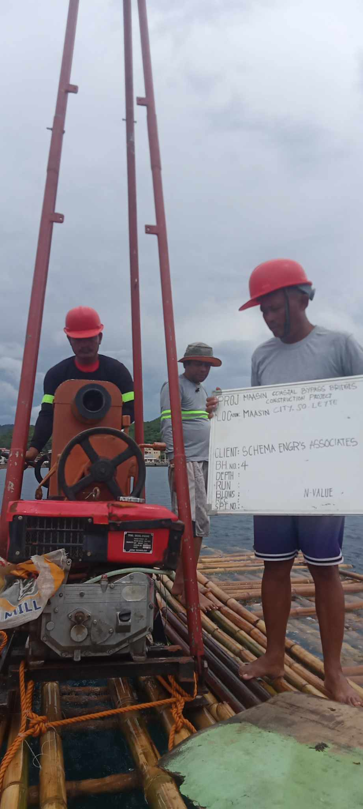
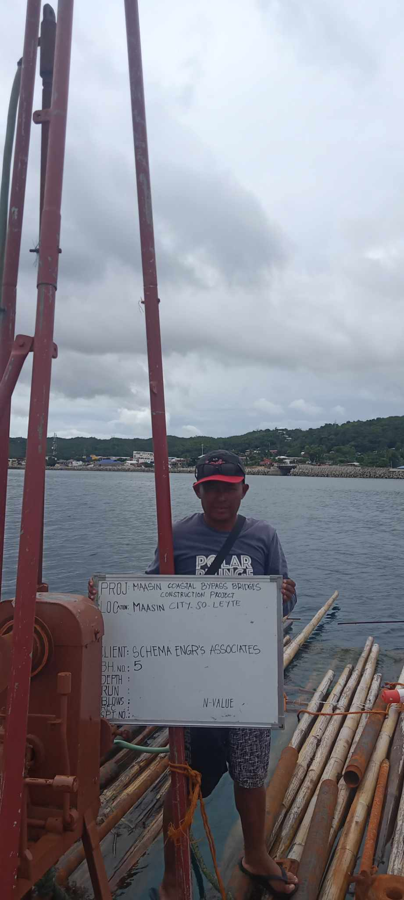

"Capturing the essence of beauty through the lens, each frame in our gallery portfolio whispers a story of timeless elegance and artistry."

In the intricate tapestry of agriculture, understanding soil is like deciphering the key to sustainable growth.
Beneath our feet lies a hidden world waiting to be explored, each soil particle whispering secrets of fertility and productivity.
"Analyzing the ground beneath us not only reveals the past but also shapes the future of agriculture."
"Soil testing isn't just about dirt; it's about unlocking the potential of every acre to nourish and sustain life."
"Digging deeper into soil analysis unveils a roadmap for farmers, guiding them towards optimal crop yields and environmental stewardship."
"The soil is a silent teacher, imparting lessons of resilience, fertility, and the delicate balance of nature."
"In the laboratory of soil testing, every sample tells a story of the land's history, its challenges, and its potential for growth."
"Soil testing isn't merely about data; it's about empowerment, giving farmers the knowledge to cultivate abundance from the earth."